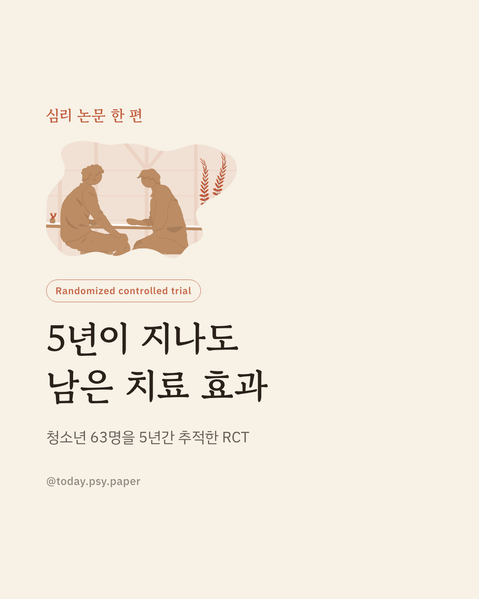
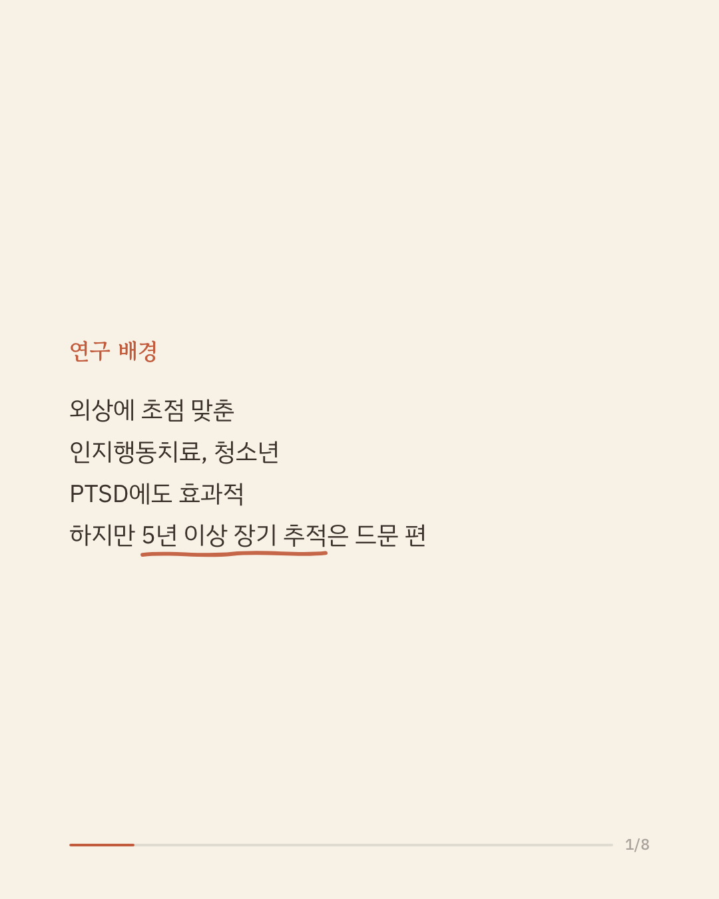
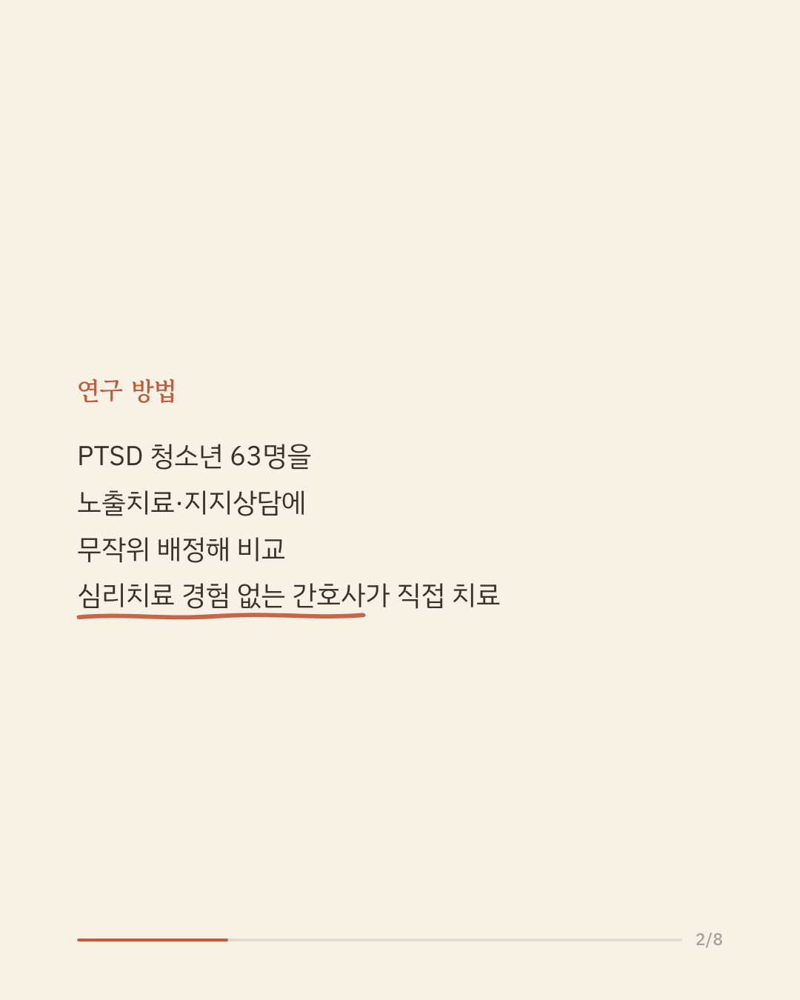
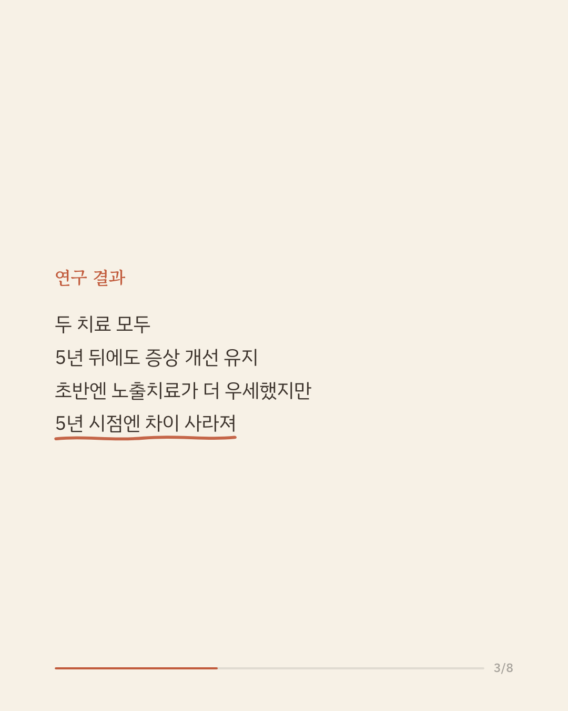
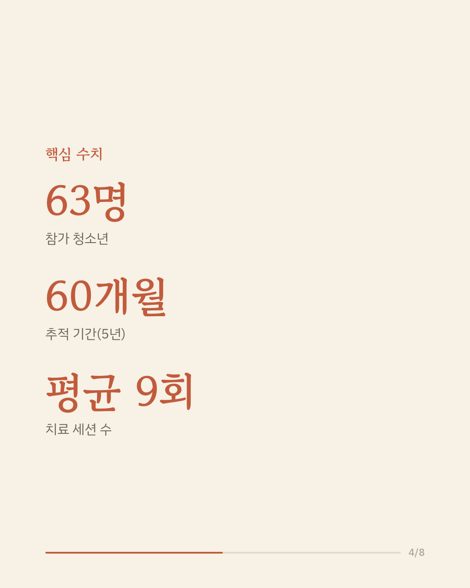
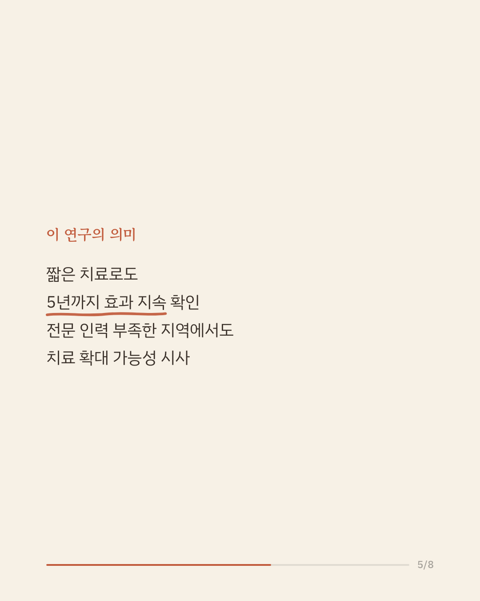
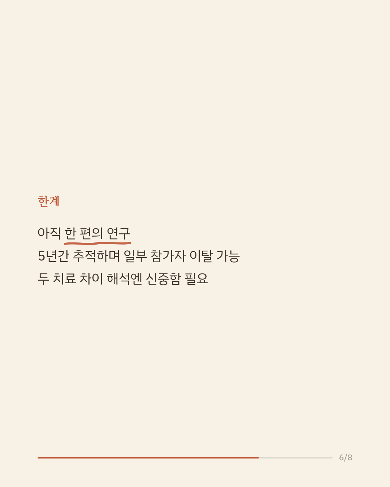
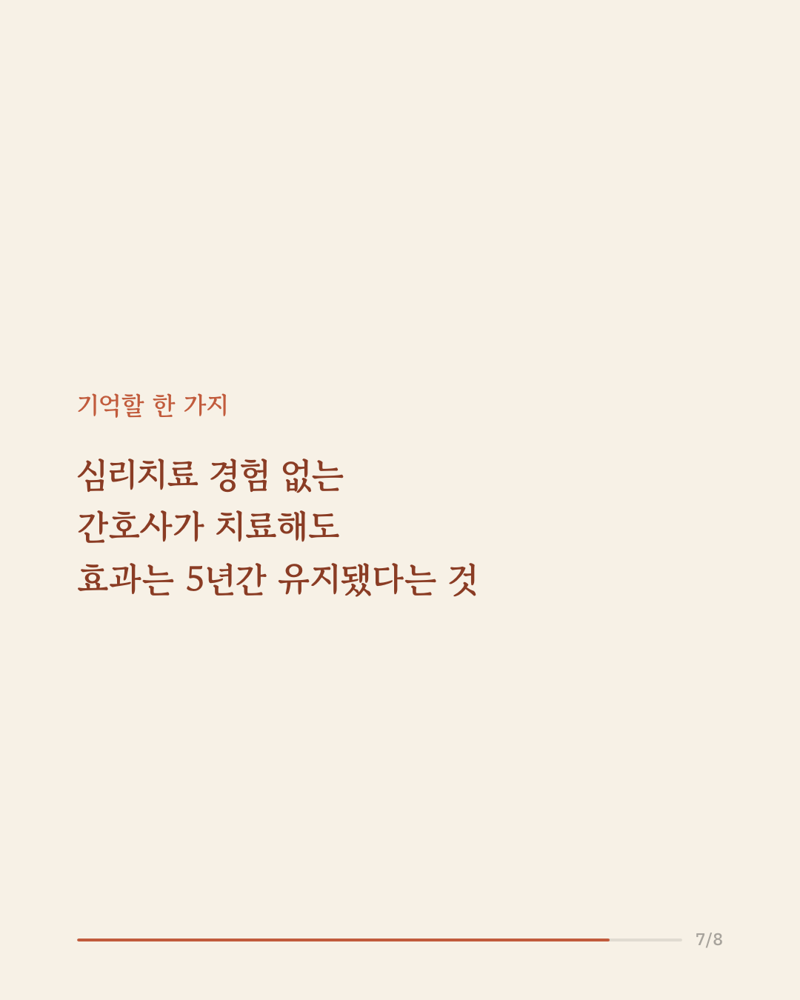
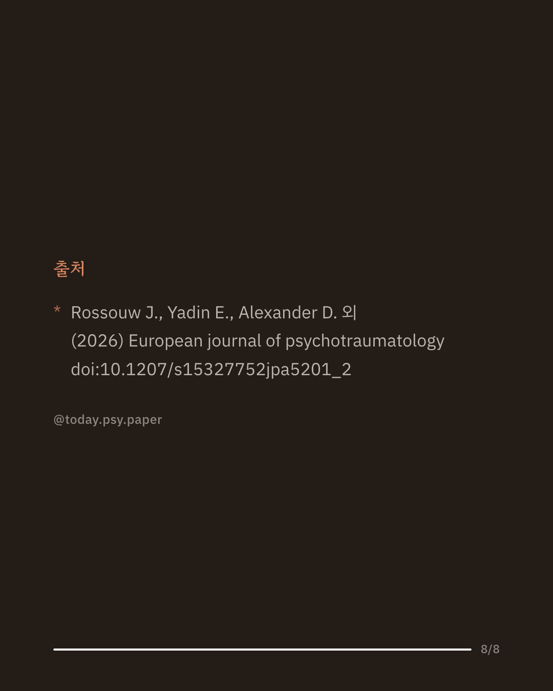

외상에 초점을 맞춘 인지행동치료는 청소년의 외상 후 스트레스 장애(PTSD)를 줄이는 데 효과적인 것으로 알려져 있습니다. 하지만 치료가 끝난 뒤 1년을 넘어서까지 추적한 장기 연구는 드뭅니다. 이번 연구는 PTSD를 겪는 청소년 63명을 대상으로 노출치료와 지지상담의 효과를 5년간 추적했습니다. 두 치료를 받은 청소년 모두 치료 종료 5년 뒤까지도 PTSD 증상 감소를 유지한 것으로 나타났습니다. 초기에는 노출치료를 받은 쪽이 대부분의 추적 시점에서 더 큰 개선을 보였지만, 60개월 시점에서는 두 치료 간 차이가 통계적으로 유의하지 않았습니다(효과크기 g=0.33, 작은~중간 정도). 이 연구는 심리치료 경험이 없는 간호사가 평균 9회기 정도의 짧은 치료를 제공해도 효과가 5년간 이어질 수 있음을 보여줍니다. 다만 63명을 대상으로 한 한 편의 연구이고, 장기간 추적 과정에서 일부 참가자가 빠졌을 가능성도 있어, 단일 연구이므로 확대 해석은 조심해야 합니다. 출처: European Journal of Psychotraumatology (2026), 'Five-year outcomes in a randomised controlled trial of prolonged exposure therapy and supportive counselling for post-traumatic stress disorder in adolescents: a task-shifted intervention' #임상심리 #청소년정신건강 #트라우마치료 #심리학연구
python3 publish.py 42734593